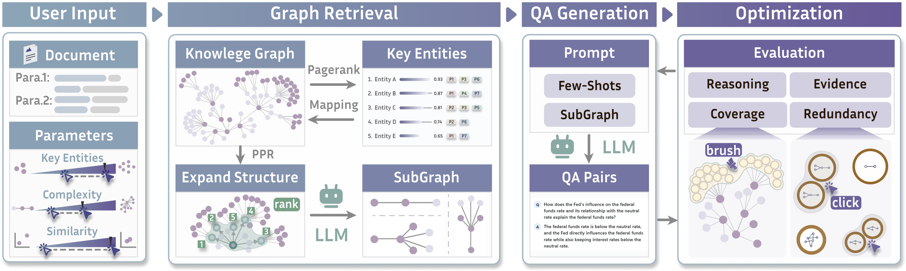
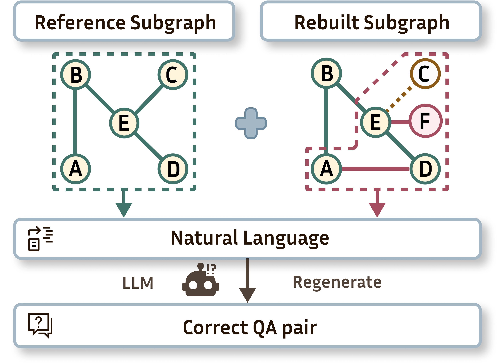
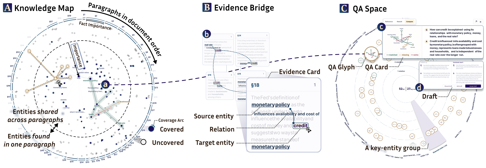
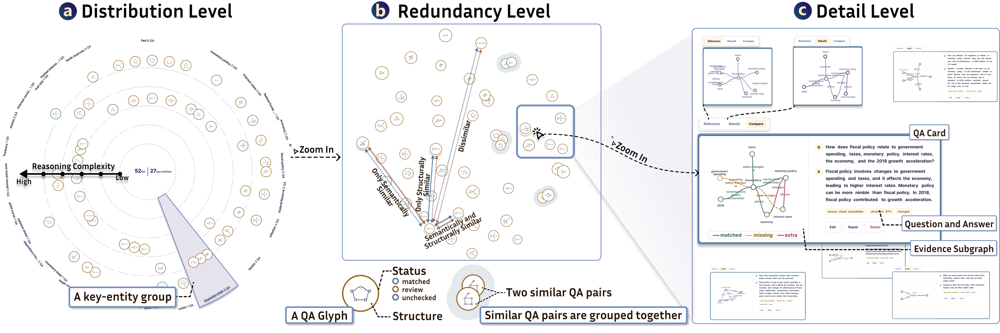
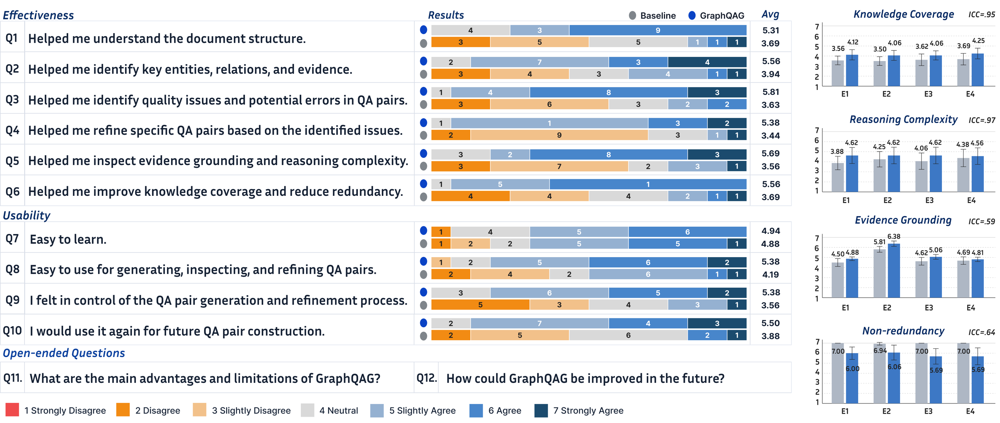
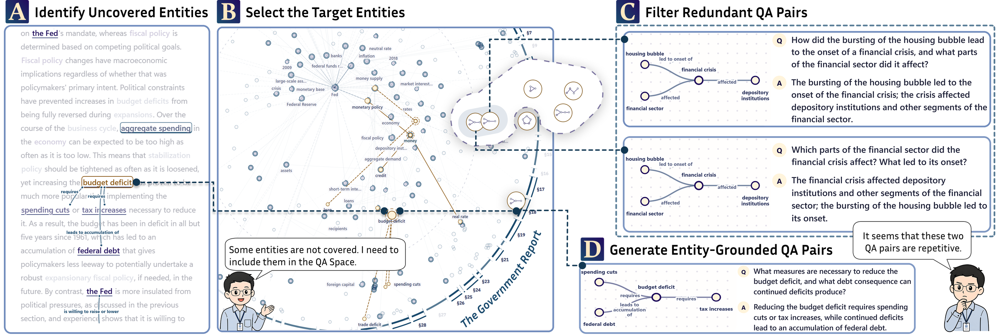
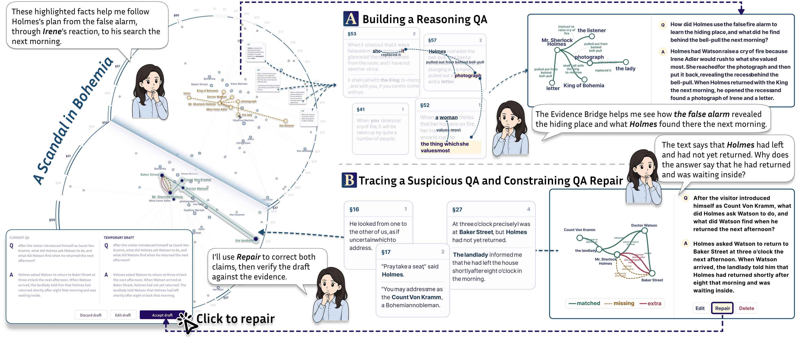

摘要
问答（question–answer，QA）对广泛用于知识库构建、问答系统以及大语言模型（large language model，LLM）的后训练。然而，长文档中的重要知识往往分散于多个段落，并通过复杂的实体关系相互连接。这种碎片化、关系性的知识给现有问答生成方法带来了显著挑战：这些方法通常无法充分覆盖文档核心内容、跨段落语义联系与多实体关系。我们提出 GraphQAG，一种由知识图谱引导的可视分析框架，用于从长文档生成高质量问答对。GraphQAG 采用三个阶段的工作流程。首先，将文档划分为段落并抽取显著实体及关系，构建文档知识图谱。其次，从实体、关系与多跳路径构建基于图的生成空间，以约束和引导基于 LLM 的问答生成。第三，以知识图谱作为交互式可视表示，使用户能够探索文档知识结构、检查生成问答对的覆盖范围及证据来源，并通过基于图的交互迭代完善问答对集合。我们通过一项包含 16 名参与者的用户研究、两个案例研究以及专家访谈评估了 GraphQAG。结果表明，GraphQAG 能有效支持用户发现知识覆盖缺口、检查生成的问答对并完善问答对集合。这些发现说明，将知识图谱、基于 LLM 的生成与可视分析相结合，有助于从长文档生成更全面、更可信的问答对。
I 引言
问答（QA）对为组织文档知识提供了一种直接而灵活的形式，已广泛应用于知识库构建 [1]、信息检索 [2] 和问答系统 [3]。近来，问答对还成为大语言模型（LLM）后训练日益重要的监督来源。例如，Phi-4-reasoning 在具有教师模型生成推理过程的问答式提示—回答对上进行微调，而 DeepSeek-V4 利用领域特定监督与教师模型输出训练专门的专家，并将它们的能力蒸馏进一个统一模型 [4]、[5]。这些发展凸显了问答对生成（question–answer pairs generation，QAG）对于构建高质量训练数据及支持广泛下游应用的重要性。
传统 QAG 方法通常遵循流水线式或端到端范式 [6]。流水线方法先识别候选答案，再生成问题 [7]；端到端方法则直接从输入上下文生成问题，减少对人工设计流水线的依赖 [6]、[8]。尽管已有进展，两种范式通常仍依赖局部上下文和表层模式。因此，当 QAG 需要远距离证据、多实体推理或复杂语义理解时，它们的效果较弱 [9]。缺少文档知识的全局表示，现有方法可能遗漏信息丰富的问答对，导致知识覆盖不完整，并降低其下游价值。
知识图谱（knowledge graph，KG）将文档知识表示为相互连接的实体和关系，使跨文本片段的语义联系显式化 [10]。这种结构化表示帮助模型捕捉超出局部上下文的长程依赖和复杂关系。近期的 QAG 研究引入了 KG 来引导问题生成，利用图结构组织分散知识并支持复杂推理 [11]、[12]。然而，现有研究大多聚焦于模型设计和生成性能，对可视探索基于图的生成空间、诊断质量问题以及完善问答对集合提供的支持有限。据我们所知，系统性支持长文档 QAG、评估与完善的 KG 引导工具仍较少。
基于文献综述和与领域专家开展的形成性访谈，我们确定了长文档 QAG 中 KG 引导可视分析的三个主要挑战（C1–C3）。具体如下：（C1）将高质量 QAG 目标转化为基于图的生成空间具有挑战性。高层次生成目标并不自然对应具体图结构，尤其是在重要知识分散于不同段落并通过多个关系相连接时。（C2）将图结构转化为自然语言问答对仍具有挑战性。图结构编码关系知识，但并不直接决定问题意图、答案边界或语言表达。（C3）评估和完善生成的问答对较为困难。若没有将问答对与其知识结构关联起来，质量问题的成因就难以定位，用户也难以决定在何处、以何种方式修改结果。
为应对这些挑战，我们提出 GraphQAG，一种 KG 引导的 QAG 可视分析框架（图 1）。GraphQAG 构建文档知识图谱，并使用其中的实体、关系及证据段落来定义基于图的生成空间。该空间引导基于 LLM 的 QAG，并将生成结果关联回底层图结构和文档证据。通过协调的可视视图，GraphQAG 使用户能够探索文档知识、检查生成的问答对，并迭代完善问答对集合。我们通过一项包含 16 名参与者的用户研究、两个案例研究和专家访谈评估了 GraphQAG。结果表明，GraphQAG 能有效支持长文档中 KG 引导的问答对生成、检查与完善。本研究的主要贡献如下：
- •
通过文献综述以及与四名领域专家的合作，我们确定了长文档 QAG 的四个核心质量目标，并提出一个统一框架，将 QAG 工作流程组织为生成、评估和完善三个阶段。
- •
我们设计并实现了 GraphQAG，一个 KG 引导的可视分析系统，通过文档 KG 构建、基于图的生成空间探索、基于 LLM 的 QAG 以及有证据依据的可视检查，将上述框架具体落实。
- •
我们通过一项包含 16 名参与者的用户研究、两个案例研究和专家访谈评估 GraphQAG。结果证明，它在支持长文档 QAG 工作流程方面具有效果与可用性。
II 相关工作
本研究与问答对生成、问答对质量评估以及 KG 引导文本生成的可视分析等既有研究相关。
II-A 问答对生成
QAG 在构建问答系统及创建训练数据方面发挥重要作用。现有 QAG 方法总体上沿着流水线式、端到端和 LLM 辅助等范式发展 [13]。早期研究通常采用模块化流水线，将 QAG 分解为答案选择、问题生成和质量过滤。例如，Ruan 等人 [14] 开发了 QuizBot，将预定义问答对、语义相似度与间隔重复相结合，支持自适应练习。Lee 等人 [15] 提出了 LIQUID，通过识别候选答案集合并生成相应问题，从无标注文本中构建问答数据集。随着序列到序列模型的发展，QAG 研究逐渐转向统一的端到端生成。Ushio 等人 [16] 对基于语言模型的 QAG 方法进行了实证比较，说明统一端到端模型能够提供强而高效的基线。近期研究进一步引入显式结构、自动反馈与 LLM 来改善生成质量。Pham 等人 [17] 使用过程图提高语义覆盖，Wang 等人 [18] 将对抗生成与自动反馈相结合用于长上下文 QAG，Yuen 等人 [19] 则探索了基于 LLM 的合成 QAG。
与主要优化自动生成过程的既有 QAG 方法相比，我们的工作着重支持用户从长文档构建并完善问答对集合。现有方法能够改善生成效率和语言质量，但对于探索文档层面的知识结构、控制生成范围，以及依据尚未覆盖的知识修订生成问答对，通常支持有限。GraphQAG 通过引入 KG 引导的可视工作流程，将文档知识结构与问答对生成、完善联系起来，以弥补这一不足。
II-B 问答对质量评估
问答对评估可从两个互补层面考虑：个体层面和集合层面。在个体层面，精确匹配、F1、BLEU 和 ROUGE 等传统指标将生成内容与参考文本比较 [3]、[20]。这些指标虽然高效且可复现，却可能惩罚合理的同义改写，也无法完整评估可回答性或文档依据。因此，近期研究引入更有针对性的评估方法，包括用于可回答性的 RQUGE [21]，用于流畅性、相关性和一致性的 QGEval [22]，以及用于基于文档的相关性、忠实性和主张支持的 RAGAS、RAGChecker 与 MiniCheck [23]–[25]。
在集合层面，评估关注生成问答对集合是否具有广泛知识覆盖、足够多样性和适当的推理难度范围。Eo 等人 [26] 与 Yadav 等人 [27] 通过控制问题形式、答案类型及其他生成条件来提高多样性。Tatarinov 等人 [28] 引入 KG-QAGen，利用知识图谱结构生成涉及不同多跳路径、集合运算和答案规模的问题。Amanlou 等人 [29] 提出 KNIGHT，将 KG 引导生成与自适应难度校准结合，以控制多项选择题的难度。
现有问答对评估研究主要提供自动评分或预定义生成控制。相比之下，GraphQAG 支持交互式评估与完善问答对集合。它帮助用户将单个问答对与其支持证据和图结构一同检查，同时揭示集合层面的模式，如尚未覆盖的知识及潜在冗余。这一设计使用户能够从被动质量评估转向对生成问答对集合的针对性修改。
II-C KG引导文本生成的可视分析
可视分析已被用于使 KG 引导的生成过程更可见、更便于检查。现有系统主要支持三类工作流程。第一类系统揭示生成前或生成过程中使用的结构化知识。LinkQ 在汇总检索事实之前，通过可编辑查询视图和图视图呈现 LLM 生成的 KG 查询 [30]。NetMe 2.0 允许用户从由文档导出的生物医学 KG 中选择实体与路径，并根据相关证据生成带引用的解释 [31]。第二类系统帮助用户检查生成内容如何以 KG 事实为依据。KNowNet 将生成回答中抽取的三元组映射到渐进图中的已验证 KG 事实 [32]，HealthGenie 则结合检索子图视图与偏好控制来完善基于 KG 的推荐 [33]。第三类研究利用可视化检查推理和检索—生成流水线。KRAGEN 将 KG 支持的推理可视化为思维图 [34]，VisPile 将生成的摘要和问题连接到 KG 事实与源文本片段 [35]。RAGViz 和 RAGTrace 展示检索上下文如何影响生成 [36]、[37]，XGraphRAG 和 RAGExplorer 则将图视图、推理轨迹、矩阵与桑基图结合，用于诊断检索流水线及失败情况 [38]、[39]。
与这些系统不同，GraphQAG 聚焦于从长文档开展 KG 引导的 QAG。现有可视分析系统主要支持检查单个生成回答、推理轨迹或检索过程，对于将多个问答对协调组织为一个有文档依据的集合，支持有限。我们通过在同一可视分析工作流程中整合文档 KG 构建、基于图的生成空间探索，以及个体和集合两个层面的检查与完善，填补这一空白。
III 形成性研究
通过文献综述和对 4 名专家的访谈，我们确定了问答对质量维度与需求。
III-A 与领域专家合作
我们与四名领域专家合作，了解长文档 QAG 的当前工作流程、常见质量问题和工具需求。我们首先审阅问答对质量的既有研究，将所得结果用作讨论的初始框架，随后开展多轮半结构化访谈。访谈聚焦于专家的实践经验、质量标准以及对支持工具的期望。通过对比文献发现与专家反馈，我们确定了 GraphQAG 的主要质量目标和设计需求。
III-A1 文献综述
我们采用搜索驱动和参考文献驱动两种方法进行文献综述。搜索使用“问题生成”“问答对生成”“问答对评估”“知识图谱问题生成”和“文本生成可视分析”等关键词。我们检索了 ACL Anthology、IEEE Xplore、ACM Digital Library 和 Google Scholar 等主要数字图书馆及学术数据库，重点关注自动 QAG、问答对质量评估，以及 KG 引导或可视化支持的文本生成三个主题。若论文提出 QAG 方法、讨论问答对质量指标或评估标准、使用知识结构引导生成，或为检查生成文本提供可视化／交互支持，则予以纳入。初步搜索后，我们进一步检查已识别论文的参考文献，以纳入相关研究。这一过程获得 51 篇代表性论文。基于这些研究，我们归纳出文档问答对的六个候选质量维度：知识覆盖、推理复杂度、证据依据、问题—答案一致性、多样性和非冗余性，见表 I。
| 质量维度 | 描述 | 参考文献 |
|---|---|---|
| 知识覆盖 | 问答对集合应覆盖源文档中重要的知识单元和关系，而非仅集中于少量显著实体或文本片段。 | [15]、[17] |
| 推理复杂度 | 每个问答对应涉及关系与证据之上的有意义推理结构，如关系理解、跨段落综合或多跳推理。 | [40]–[42] |
| 证据依据 | 每个问答对应得到可识别源文本片段的支持，答案及推理过程可追溯至对应证据。 | [23]、[25]、[40] |
| 问题—答案一致性 | 每个问答对的问题和答案应保持语义一致，答案直接回应问题并满足其语义约束。 | [21]–[23] |
| 多样性 | 问答对集合应包含不同的问题形式、答案类型、知识视角及推理模式。 | [26]、[27] |
| 非冗余性 | 每个问答对应在结构和语义上区别于其他问答对，避免图结构、支持证据或问答内容的实质重叠。 | [17]、[27]、[43] |
III-A2 迭代访谈
在文献导出的质量维度基础上，我们通过迭代访谈考察这些维度对长文档 QAG 实践的适用性，并获取支持工具的具体需求。
参与者。我们邀请 4 名专家（E1–E4，年龄 30–50 岁）参加半结构化访谈。他们在自然语言处理、可视分析、数据工程和工业应用方面具有互补背景。E1 和 E2 是大学教授。E1 专攻自然语言处理，具有 10 年经验，在文档理解、问题生成与 LLM 应用方面经验丰富。E2 专攻可视化与可视分析，具有 12 年经验，并有 KG 可视化及人机协同分析研究经验。E3 和 E4 在业界工作。E3 是互联网公司的 AI 数据工程师，在问答系统和领域模型微调方面具有 8 年经验。E4 是企业数字化转型部门的高级工程师，具有 10 年经验，熟悉企业知识库构建及业务文档管理。
流程。我们通过迭代半结构化访谈收集专家反馈，每轮围绕 3 个主题展开：（1）请专家依据研究或职业经验描述当前的 QAG 工作流程，讨论涉及文档选择、提示设计、结果检查，以及不满意问答对的修改。（2）讨论现有 QAG 方法的常见质量问题。我们展示文献综述中确定的候选维度，并询问这些维度是否适用于长文档 QAG，以及专家在生成问答对中经常观察到哪些问题。（3）请专家描述对支持工具功能的期望。我们记录其关于生成流程、质量标准和系统功能的反馈。每轮结束后，汇总意见并据此完善下一轮访谈问题。这一过程帮助确认了问题和设计方向。
III-B 发现
形成性研究表明，长文档 QAG 不是简单的一步生成任务。现有方法虽然能够快速生成问答对，但结果通常需要进一步检查、验证和完善，才能作为高质量问答数据使用。依据专家反馈，我们归纳了 3 项主要发现：
（1）专家强调长文档 QAG 的质量控制。专家一致认为，一步生成无法保证问答对可用，用户需要明确的检查和完善支持。在审阅表 I 的六个候选维度后，他们优先考虑四个质量目标：知识覆盖、推理复杂度、证据依据和非冗余性。他们没有优先考虑问题—答案一致性，因为当前 LLM 通常能产生与问题语义一致的答案，严重的一致性错误并不常见。他们也没有优先考虑多样性，因为多样化的问题形式和答案类型未必增加问答对集合的知识价值。这些维度指导了生成空间构建、有证据依据的生成及多层次评估的系统需求。
（2）专家将 KG 视为文档理解与 QAG 之间的桥梁。专家指出，长文档中的重要知识经常分散于不同段落，并通过实体、关系和证据片段相连。文档 KG 可以使这类分散知识显式化，帮助用户将文档理解为相互连接的知识空间。它也可为生成提供结构化范围，使问答对基于选定图结构而非孤立文本片段生成。因此，专家认为 KG 引导有助于支持更好体现文档核心知识及关系结构的问答对。
（3）专家认为迭代评估与完善不可或缺。专家强调，高质量 QAG 通常需要多轮检查与修订。生成问答对可能遗漏重要知识、依赖不充分证据、涉及浅层推理，或重复类似内容。仅凭自动生成难以解决这些问题。因此，用户需要检查生成的问答对、追溯其支持知识、移除不合适结果并补充缺失内容。这一发现促使我们将 GraphQAG 设计为迭代工作流程，用户可通过基于图的可视反馈评估并完善问答对。
III-C 设计需求
专家（E1–E4）一致认为，KG 引导的 QAG 应从文档理解和生成范围设定，推进到有证据依据的生成及迭代完善。基于反馈，我们在三个维度下导出六项需求：构建基于图的生成空间、使问答生成以证据为依据，以及在多个层次评估并完善问答对。
D1. 构建基于图的生成空间。
R1. 构建具有源证据链接的文档 KG。E1 指出，长文档中的重要知识往往分散于段落间，必须通过实体和关系连接起来。E4 强调证据可追溯性：“如果一个问答对无法追溯到源文档，就很难验证和复用它。”因此，系统应构建文档 KG，将图事实连接到支持它们的源文本片段，使用户能够将图结构追溯回原始证据。
R2. 将生成目标映射到可检查的图结构空间。E1 解释，问答对可能依赖不同结构，包括局部事实、多跳路径和综合关系。E2 强调，这些结构应当可见且可控：“系统生成问答对之前，用户应能看到正在使用哪些实体、关系和路径。”因此，系统应将生成目标组织为可检查、选择和调整的图结构。
D2. 使问答生成以证据为依据。
R3. 使用图结构和源证据引导 QAG。E1 观察到，隐式生成范围可能使 LLM 遗漏重要内容或组合不相关信息。E3 指出，用于模型训练的问答对应该在明确的知识与证据边界内生成。因此，系统应将选定实体、关系、路径及源文本片段用作生成约束。
R4. 揭示每个问答对的证据与推理结构。E1 强调，多关系问答对应揭示中间推理结构。E2 解释：“只有一个问题和一个答案，并不能说明结果为何可靠。用户需要看到图结构和支持段落。”因此，系统应将每个问答对连接到其源证据、相关图元素和推理路径。
D3. 在多个层次评估并完善问答对。
R5. 在个体和集合两个层次评估质量。E1 强调检查单个问答对的证据依据和推理完整性。E2 建议利用可视摘要从全局角度评估整个问答对集合，E4 则关注重要业务知识是否得到覆盖且没有不必要的重复。因此，系统应支持个体层面的证据与推理检查，同时支持集合层面的知识覆盖和冗余诊断。
R6. 支持基于图的针对性完善。E2 建议将用户反馈关联到图结构，使完善目标可见。E3 指出：“如果只有少数问答对有问题，重新生成整批结果效率低，也几乎不给用户控制权。”E4 期望用户能够为缺失知识生成补充问答对。因此，系统应支持依据图结构、源证据和诊断结果，有针对性地新增、修订、修复和移除问答对。

IV 方法
本节详细介绍方法。图 2 展示框架如何构建文档 KG、导出生成单元，并通过图与证据反馈验证和完善问答对。
IV-A 关键实体识别
系统首先将文本划分为若干语义连贯的片段，然后使用 GraphRAG [44] 从每个片段抽取实体及其关系，合并不同片段中语义等价的实体，并构建覆盖整个文档的 KG（R1）。
KG 通常包含大量实体，难以确定有价值的目标实体。为解决这一问题，GraphQAG 首先系统地评估实体重要性。具体而言，它采用具有段落先验的 PageRank [45] 衡量 KG 中实体的重要性（R2）。令 denote the nonempty set of paragraphs in the document that contain entities, and let 表示文档中包含实体的非空段落集合， denote the set of distinct entities contained in paragraph 表示段落 . The system first assigns each paragraph an equal initial probability mass of 中不同实体的集合。系统首先为每个段落赋予相等的初始概率质量 and then distributes this mass uniformly among the entities in that paragraph. Accordingly, the paragraph prior probability of entity ，再在该段落包含的实体间均匀分配这部分质量。相应地，实体 is defined as follows: 的段落先验概率定义如下：
| (1) |
每次迭代的 PageRank 得分定义如下：
| (2) |
其中， denotes the importance score of an entity at the 表示实体在第 -th iteration, and 次迭代时的重要性得分， is the damping factor. 为阻尼因子。 denotes the set of distinct entities adjacent to entity 表示 KG 中与实体 in the KG, and 相邻的不同实体集合， denotes the number of entities adjacent to entity 表示与实体 . 相邻的实体数量。 denotes the total probability mass of all dangling entities at the 表示第 -th iteration. The probability mass of dangling entities is redistributed according to the paragraph prior 次迭代时所有悬挂实体的概率质量总和。悬挂实体的概率质量根据段落先验 . The algorithm is considered to have converged when the difference between two consecutive iterations falls below a predefined threshold. Finally, 重新分配。当连续两次迭代之差小于预定义阈值时，算法视为收敛。最后，GraphQAG 根据最终重要性得分对实体降序排序，选择前 entities to form the set of key entities. 个实体组成关键实体集合。
IV-B 局部子图检索
关键实体集合代表 KG 的核心知识，但其界定的知识范围是隐式的。因此，识别关键实体后，系统进一步检索与每个关键实体具有较高结构相关性的实体，构建用于 QAG 的局部子图（R3）。我们采用个性化 PageRank（Personalized PageRank，PPR）[46] 衡量 KG 中实体与关键实体的结构相关性。系统以每个关键实体为种子，在完整 KG 上执行个性化随机游走，迭代计算 PPR 得分；当连续两次迭代之间的变化小于预定义阈值时达到收敛。对于每个关键实体，系统按 PPR 得分对所有实体降序排序，并提示用户指定 , the number of top-ranked entities to retrieve. The selected top-，即检索排名靠前实体的数量。选定的前 entities, together with the key entity, form a candidate node set. The user also selects a complexity level from 1 to 5, which determines the maximum length of a relation chain originating from the key entity. Higher levels include more distant entities and support questions requiring longer reasoning chains. Lee et al. 个实体与关键实体共同构成候选节点集合。用户还从 1 到 5 选择一个复杂度级别，决定从关键实体出发的关系链最大长度。更高级别包含更远的实体，支持需要更长推理链的问题。Lee 等人 [47] 观察到，推理深度从 1 跳增至 5 跳时，问答准确率总体下降。因此，为限制错误累积，同时保留对复杂多跳问题的支持，我们将关系链长度上限设为五跳。最后，系统依据选定复杂度级别过滤候选节点，并保留它们在原始 KG 中的事实关系，构建以关键实体为中心的局部子图。
IV-C 子图引导的问答对生成
为实现子图引导的 QAG，系统完成两个准备步骤：参考子图构建和问题规格定义（R4）。系统将实体、关系及其索引编码为结构化输入，并使用 LLM 从关系集合中选择能够共同支持同一个问题的边。构建过程旨在抽取必要且相互连接的事实，同时保留推理所需的结构信息。获得候选参考子图后，系统验证关系索引、移除重复边，并保留与关键实体连接的边集合。不同参考子图之间的重叠程度，使用其边集合的 Jaccard 相似度衡量。当相似度超过预定义阈值时，仅保留包含更多信息的子图。参考子图构建与去重流程汇总于算法 1。
| 输入 | 关系集合 , candidate index sets ，候选索引集合 , central entity ，中心实体 , threshold ，阈值 |
|---|---|
| 输出 | 去重后的参考子图 |
| 1 | |
| 2 | 对于每个 ，执行： |
| 3 | |
| 4 | |
| 5 | |
| 6 | 若 ，则： |
| 7 | 继续下一次循环 |
| 8 | 结束条件判断 |
| 9 | |
| 10 | 若 或 ，则： |
| 11 | |
| 12 | 否则若 ，则： |
| 13 | |
| 14 | 结束条件判断 |
| 15 | 结束循环 |
| 16 | 返回 |
在此基础上，系统将每个参考子图转化为相应的显式问题规格，定义问题覆盖的事实范围、需要表达的推理关系，以及答案槽位。每个问题规格包含中心实体、候选答案、证据关系、事实标识符和源段落。在 QAG 阶段，LLM 将问题规格转化为问答对。输入包括问题规格、参考子图及相关源语句。QAG 提示模板约束问题目标、答案槽位和证据使用范围，生成的问答对以结构化格式返回。
IV-D 反向验证与优化
为评估结果质量，系统仅使用问答对与 KG 重建子图，并通过与参考子图比较来验证它（R5）。系统将问答对划分为语义完整的子句，依据语义相似度进行实体链接，再结合文本相似度和图结构，对每个子句对应的候选事实进行匹配和排序。系统优先采用高置信度事实，并连接共享实体的事实。对于仍未连接但在问答对中被显式提及的实体，系统遍历最短路径建立辅助连接，恢复隐含推理过程。最后，选择高置信度的连通子图作为重建结果。

系统依据事实集合、实体集合、源文本片段及图结构，将重建子图与参考子图比较，并将差异划分为六类：完全匹配、事实遗漏、事实新增、事实替换、无关证据和无法确定。只有当问答对中的事实能够存在于 KG 中，并且重建结果在事实内容和结构两方面均与参考证据一致时，该问答对才有效。
对于每个问答对，系统将参考子图、重建子图及原始问答对共同输入 LLM 进行修正（图 3）。依据两个子图在实体、关系和结构上的差异，模型移除没有支持的事实、补充缺失信息，并修正错误关系。每个修改后的问答对再次接受反向验证，只有当其重建子图与参考证据一致时，才纳入有效样本（R6）。
V GraphQAG 系统
本节介绍 GraphQAG。我们首先给出系统概览，随后描述可视组件、交互与实现。

V-A 系统概览
我们提出 GraphQAG，一个从长文档生成、检查和完善问答对集合的可视分析系统。界面提供控制面板（图 1-A）和文档视图（图 1-B）。可视分析采用 3 个协调组件：知识地图（图 1-C）、证据桥（图 1-D）和问答空间（图 1-E）。
控制面板支持文档上传、关键实体设置、复杂度设置、相似度阈值及问答生成。关键实体设置决定使用多少个按 PageRank 排序的实体作为检索种子，遵循第 IV-A 节的方法。复杂度设置控制第 IV-B 节所述局部子图检索的跳数范围。相似度阈值用于识别可能冗余的问答对。问答生成控件运行第 IV-C 节所述的子图引导 QAG 方法。文档视图显示源文本，并指示已覆盖和未覆盖实体（R1）。知识地图显示文档 KG、关键实体、参考子图及局部问答参考覆盖率，使第 IV-C 节构建的基于图的生成目标可检查（R2、R3）。证据桥将选定图事实及问答对连接到支持它们的源文本片段（R4）。问答空间在分布层、冗余层和细节层组织问答对集合（图 5）。这些层级呈现问答分布、潜在冗余，以及第 IV-D 节反向验证方法产生的个体验证结果（R5）。
V-B 可视设计
界面采用三个协调可视组件。知识地图呈现文档知识及其源位置，问答空间组织生成目标和问答对，证据桥将选定结构连接到源文本。这些组件共享段落、实体、关系、生成目标和问答标识符。在任一组件中的选择都会反映到其他组件。这一设计遵循协调多视图的指导原则 [48]。
V-B1 知识地图
用户需要看到不同段落的知识如何相连，以及每个关系来自何处（R1）。知识地图采用径向节点—链接布局。外环遵循源段落顺序，每个扇区表示一个段落，扇区角宽编码链接到该段落的图事实的重要性总权重。我们依据实体出现的源段落将实体分为两类，并将两类实体放在知识地图的不同区域。共享实体出现在两个或更多段落，连接跨段落信息，位于内部区域。局部实体仅出现在一个段落，位于外部区域的相应段落扇区。这一设计使跨段落联系可见，同时让局部实体靠近其源段落（图 4-A）。段落扇区围绕外环按源文档顺序排列，保留文档序列 [49]。内外区域分离减少了共享实体与局部实体之间的视觉重叠 [50]。在每个区域内，到中心的距离依照既有径向图布局方法 [51]，编码公式 2 定义的实体重要性得分。得分更高的实体更靠近中心。对于实体 , let ，令 be the set of unique generation-eligible facts incident to 为文档 KG 中与 in the document KG. Let 关联、且符合生成条件的唯一事实集合，令 be the set of unique facts included in the r 为当前问答对集合的参考子图中包含的唯一事实集合，令 denote the normalized importance weight of fact 表示事实 . We define the local QA-reference coverage of 的归一化重要性权重。我们将 as 的局部问答参考覆盖率定义为：
| (3) |
每个规范化事实仅计算一次。得分范围为 0 到 1，以百分比显示。每个实体周围圆弧的长度编码该得分 [52]。完整圆环表示 coverage, while no arc indicates 覆盖率，无圆弧则表示 coverage. A short arc reveals a gap in the reference scope and supports targeted refinement ( 覆盖率。较短圆弧揭示参考范围中的缺口，支持针对性完善（R5、R6）。链接表示图关系，其宽度和不透明度反映事实重要性、覆盖情况，以及该关系是否属于当前生成空间。这些视觉通道帮助用户区分知识重要性、覆盖情况和生成状态 [53]。
V-B2 证据桥
用户需要在保持选定问答对及子图可见的同时，将与问答对关联的图事实追溯到源文本（R1、R4）。证据桥（图 4-B）从知识地图中的选定子图向问答空间中的问答对绘制虚线曲线。对于链接到选定图事实的每个源段落，它创建一张证据卡片（图 4-b）。同一段落的证据摘录显示在同一张卡片中。卡片标题显示段落编号、可用时的章节标题，以及链接图事实的数量。
卡片以紧凑行列排列在曲线中部附近，一条细虚线将每张卡片连接到曲线。这种排列使多个段落的证据能够与选定问答对和子图同时展示 [54]。实体提及采用蓝色粗体文本。当用户聚焦某个实体提及时，系统淡化无关文本。在同一卡片内，带标签的蓝色弧线将聚焦实体与直接相关实体的提及连接起来。若聚焦实体出现在多张卡片中，虚线曲线连接它在不同卡片中的提及。这些曲线表明同一实体出现在不同段落中，有助于用户沿图事实和源文本片段追踪实体 [55]。
这些可视链接为检查问答空间中的相应问答对提供源上下文。
V-B3 问答空间
问答空间在保留集合上下文的同时，从概览到细节组织问答对集合（R5）。它提供三个语义缩放层级：分布层、冗余层和细节层（图 5）。这一三级设计遵循概览、语义缩放与按需细节的既有指导原则 [56]、[57]。
在分布层，每个扇区依据一个关键实体对问答图符分组（图 5-a）。扇区角度编码组内问答对数量，径向距离编码推理结构规模，以参考子图中的关系数量衡量。图符轮廓指示问答对处于匹配、需要复核或尚未检查的状态。这些编码展示问答对如何分布于关键实体，以及它们的推理结构规模和验证状态有何差异。
在冗余层，每个问答图符表示一个问答对（图 5-b）。问答图符的位置由语义与结构相似度的投影确定。只有当两个问答对的内容和参考子图结构都相似时，它们的图符才靠近。任一指标得分低都会使它们分离。水平和垂直方向没有独立含义。图 5-b 中橙色和蓝色引导线分别说明语义和结构相似度，实线与虚线表示相应相似度是否超过阈值。四种组合区分仅一个指标相似、两个指标都相似或都不相似的问答对。淡蓝色气泡包围两个相似度均超过阈值、可能冗余的问答对。
在细节层，随着用户放大，选定问答图符展开为问答卡片（图 5-c）。在细节层，随着用户放大，选定问答图符展开为问答卡片（图 5-c）。卡片显示问题、答案、子图视图和验证摘要。参考（Reference）视图显示用于生成的参考子图；重建（Rebuilt）视图显示由第 IV-D 节反向验证从问答对重建的子图；比较（Compare）视图以同一布局叠加参考和重建子图（R4）。绿色实线表示匹配事实，琥珀色虚线表示缺失事实，红色实线表示额外事实。节点轮廓也以绿色、琥珀色和红色编码这三种状态，缺失节点采用虚线轮廓。这一布局使结构差异便于比较 [58]。检测到无支持内容时，卡片报告没有依据的子句数量（R5）。

V-C 交互
交互在源文本、图结构、问答对和问答对集合之间，将诊断与完善连接起来。
跨视图探索。悬停实体、关系、段落或问答对会提供临时预览；点击则保持相关焦点激活。选择图元素会揭示其源上下文（R1）。选择问答对会高亮其图结构、显示其证据卡片，并在文档视图中定位其证据（R4）。
语义缩放。用户在问答空间滚动，在分布层、冗余层和细节层之间移动（R5）。悬停问答图符显示预览，点击保持预览可见，双击在细节层打开完整问答卡片。知识地图也支持平移和缩放。
针对性问答生成。用户选择“Generate QA”（生成问答），创建初始问答对集合。他们可在文档视图选择文本，再选择“Generate Here”（在此生成）。系统选择与该文本实体最重叠的生成目标。在知识地图中，用户可通过选择高亮关系构建推理路径，每次选择增加一个事实并更新推荐。系统将确认后的参考子图和最小源证据发送给 LLM（R3）。生成问答对经验证后，带验证状态加入问答空间。
单个问答的检查与完善。用户打开问答卡片，在参考、重建和比较视图之间切换（R4）。悬停图元素会在知识地图中高亮其对应元素。修复期间，用户可以选择诊断子句，检查匹配事实和源证据。编辑会创建临时草稿。对于修复，LLM 根据固定参考子图、最小源证据及选定修复约束重新生成临时草稿。系统重建并验证每份草稿，用户接受有效草稿或将其丢弃（R6）。接受前，当前问答对保持不变。“Delete”（删除）将问答对从当前集合中移除。
集合层面的评估与补全。用户在知识地图检查局部问答事实覆盖率；在分布层检查问答分布、推理复杂度和验证状态；在冗余层，通过图符的接近程度与淡蓝色包络识别潜在冗余问答对（R5）。用户可调整相似度阈值、为未覆盖事实生成问答，并编辑、修复或删除有问题的问答对（R6）。每次变更被接受后，系统更新可视编码。
V-D 实现
GraphQAG 前端使用 Vue 3 和 TypeScript 构建，Pinia 管理共享状态。D3 [59] 对知识地图进行布局，Vue Flow 呈现问答空间。后端使用 FastAPI 提供文档处理及问答服务。GraphRAG [44] 从文档中抽取实体和关系，Sentence-Transformers [60]、[61] 将问答文本链接到图元素，DeepSeek-V4-Flash [5] 支持问答生成、验证和修复。
译者核对注：原文细节层说明连续重复同一句“选定问答图符随放大展开为问答卡片”；此处按原文保留。
VI 评估
我们围绕两个研究问题评估 GraphQAG：
RQ1.GraphQAG 如何改善长文档 QAG 的有效性与可用性？
RQ2.GraphQAG 如何帮助用户生成更高质量的问答对集合？
为回答这些问题，我们开展三项互补评估：（1）被试内用户研究，在任务有效性、可用性和问答对质量方面比较 GraphQAG 与基线系统（RQ1、RQ2）；（2）两个案例研究，展示用户如何在现实场景中利用 GraphQAG 发现知识缺口、检查证据并迭代完善问答对集合（RQ2）；（3）专家访谈，收集对系统设计和 KG 引导 QAG 实际价值的反馈（RQ1、RQ2）。

VI-A 用户研究
为回答 RQ1 和 RQ2，我们开展被试内用户研究，比较 GraphQAG 与基线，考察参与者的主观体验及其最终问答对集合的质量。
参与者与任务。我们招募了 16 名参与者（P1–P16，8 名女性、8 名男性）。所有人此前都有使用 LLM 的经验，但从未使用过 GraphQAG。其中 6 人（P5–P7、P9 和 P14–P15）报告较高的 KG 熟悉度，在五点熟悉度量表上评分为 4 或 5。实验采用被试内设计，每人完成两项 QAG 任务，分别使用 GraphQAG 和基线条件。实验材料选取两个不同领域的长文档：Arthur Conan Doyle 的侦探故事《波希米亚丑闻》（A Scandal in Bohemia）[62]，以及 GovReport 数据集的一份货币政策报告 [63]。两份文档在长度、段落数量、实体与关系数量、知识密度及所需跨段落推理程度上大致相当。在每种条件下，参与者使用一份文档生成、复核并完善问答对集合。为保证公平比较，GraphQAG 与基线使用相同底层 LLM，即 DeepSeek-V4-Flash [5]；参与者还必须保持两种条件中的关键生成参数一致，包括关键实体数量与复杂度跳数设置。基线实现为 LLM 加提示交互条件：参与者通过提示引导同一底层 LLM 从源文档生成问答对，可以阅读文档、编写提示、请求生成，并手动修订或选择生成结果。但基线不提供 GraphQAG 的图结构生成空间、图到证据的映射、多层次质量评估或交互式完善能力。我们采用拉丁方设计 [64] 平衡实验条件顺序、文档呈现顺序及文档与条件的分配（4 组 4 participants). 4 名参与者）。
流程。每位参与者依次完成 GraphQAG 与基线条件，研究持续约 2 小时。每种条件开始前，参与者接受简短教程，在独立文本上练习，并花 15 分钟了解任务文档的主题与结构。随后使用指定工具生成、验证和完善问答对，最后提交问答对集合。两种条件使用相同任务要求与时间限制。每种条件结束后，参与者填写相同的 10 项七点 Likert 量表问卷，涵盖有效性（Q1–Q6）及可用性（Q7–Q10）。我们分别计算每位参与者在每种条件下 Q1–Q6 和 Q7–Q10 的平均值，得到两项得分。GraphQAG 条件后，参与者另回答两个开放问题（Q11–Q12），涉及其优势、局限和可能改进。
形成性研究中的同四名专家（E1–E4）独立评估了 32 个最终问答对集合。评分前，他们花约 30 分钟审阅两份源文档、确定关键知识点并解决分歧，为每份文档创建共享清单，涵盖关键实体、关系、支持证据及预期推理连接。所有集合均匿名化并随机排列，不透露所属条件。专家以七点量表对知识覆盖、推理复杂度、证据依据及非冗余性评分。对于每个维度，我们采用双向随机效应、绝对一致、平均测量组内相关系数 ICC(2,4)，并给出 95% 置信区间，以评估评分者间可靠性 [65]、[66]。四名专家对每个集合、每个维度的评分取平均，得到专家质量得分。
定量结果。GraphQAG 的有效性和可用性评分均显著高于基线（图 6）。有效性方面，GraphQAG 的中位数为 5.67（), compared with 3.42 (），基线为 3.42（) for the Baseline. A two-sided Wilcoxon signed-rank test showed a significant difference (）。双侧 Wilcoxon 符号秩检验表明差异显著（, 、, 、). For Usability, median scores were 5.25 (）。可用性方面，GraphQAG 中位数为 5.25（) for ），基线为 4.00（) for the Baseline, also showing a significant difference (），差异同样显著（, 、, 、). At the item level, the largest descriptive mean differences were found in identifying quality issues and potential errors (）。在题项层面，最大的描述性均值差出现在识别质量问题与潜在错误（Q3：5.81 对 3.63）、检查证据依据与推理复杂度（Q5：5.69 对 3.56），以及完善问答对（Q4：5.38 对 3.44）。相比之下，两种条件的易学性评分接近（Q7：4.94 对 4.88）。这些结果表明，GraphQAG 主要改善参与者检查与完善问答对的能力，同时保持与基线相当的易学性。
专家评估（图 6）中，知识覆盖的评分者一致性优秀（, 95% CI ，95% CI ) and reasoning complexity (），推理复杂度亦如此（, 95% CI ，95% CI ), but moderate for evidence grounding (）；证据依据（, 95% CI ，95% CI ) and non-redundancy (）和非冗余性（, 95% CI ，95% CI ). The ratings for evidence grounding and non-redundancy showed greater between-expert variability than knowledge coverage and reasoning complexity.）则为中等一致性。证据依据和非冗余性的评分，在专家间的变异大于知识覆盖与推理复杂度。
依据四名专家平均后的评分（图 6），GraphQAG 在推理复杂度上显著高于基线（GraphQAG：; Baseline: ；基线：; ；; ；; ；) and evidence grounding (），证据依据亦显著更高（GraphQAG：; Baseline: ；基线：; ；; ；; ；). ）。GraphQAG 的知识覆盖中位评分高于基线，但经 Holm 校正后差异不再具有统计显著性（GraphQAG：; Baseline: ；基线：; ；; ；; ；). In contrast, the Baseline received a significantly higher rating for non-redundancy (）。相反，基线的非冗余性评分显著更高（GraphQAG：; Baseline: ；基线：; ；; ；; ；).）。
定量结果表明，GraphQAG 改善了参与者感知的有效性和生成问答对集合的质量。为更好理解这些结果，我们进一步分析参与者评论与交互行为，确定了两个反复出现的主题。
图结构作为问答生成的支架。参与者报告，GraphQAG 将实体、关系、路径和支持证据组织成可检查的图结构，使生成范围更明确。基线主要通过自然语言提示表达生成要求，而 GraphQAG 将这些要求外化为可见、可操作的图元素。参与者可在启动或完善生成前，检查文档层面的知识结构、识别相关实体与关系，并决定应包含哪些知识。P11 指出：“图结构比纯文本方法更好地捕捉了文档关系。”这一发现有助于解释 GraphQAG 在知识理解、生成范围控制及有证据依据的 QAG 方面较高的评分。
多层次视图支持验证与完善。协调视图连接问答对、图结构及支持它们的源文本片段，使参与者能够将答案追溯到证据，评估证据依据，并检查相关推理结构。在集合层面，质量概览揭示覆盖缺口、缺失推理结构和潜在冗余问答对，帮助参与者决定新增、修订或移除哪些问答对。P3 观察到：“使用基线时，我只能逐个检查结果；GraphQAG 则直接显示了哪些内容还未被覆盖。”不过，一些参与者需要时间学习系统，并要求更清晰的入门引导、更明确的功能解释，以及问答检查与完善过程中的更强可视反馈。
VI-B 案例研究
本节呈现用户研究中的两个案例。案例 1 展示 P8 如何识别覆盖缺口、为未覆盖实体生成问答对并移除冗余；案例 2 展示 P15 如何连接跨段落证据，并修复一个可疑问答对。我们分析了两个案例记录的交互和生成结果。

VI-B1 案例1：绘制知识缺口以针对性完善问答
P8 是具有知识库构建经验的数据标注工程师，任务是依据 GovReport 数据集的一份 60 段货币政策报告生成问答对集合。报告在多个章节中分散描述了机构、政策工具、实施机制及经济后果。P8 上传文档，将关键实体数设为 9，并在五级尺度中选择复杂度级别 2。GraphQAG 随后构建 KG，生成 59 个候选问答对。
初始问答对集合的跨视图检查。P8 首先查看问答空间，其中按关键实体组织了 59 个候选问答对（图 1-E）。“Fed”（美联储）和“monetary base”（货币基础）等实体周围的大组表明，核心货币政策概念获得了较充分覆盖。P8 并未把生成数量当成完整性的证据，而是将其分布与文档视图中高亮的源内容（图 1-B）、知识地图中的相应实体（图 1-C）比较。在文档视图中，P8 看到许多实体显示为浅蓝色，表明它们出现在文档中，却尚未被任何生成问答对覆盖。知识地图中许多节点也仍为浅蓝色，显示同样模式。跨视图比较帮助 P8 认识到部分文档知识仍未覆盖。正如 P8 所说：“这些问题似乎覆盖了美联储和货币基础等核心概念，但一些实体没有被覆盖，我需要把它们纳入问答空间。”
针对未覆盖实体的生成。为解决这些缺口，P8 在文档视图选择几个感兴趣的未覆盖实体（图 7-A）。点击部分实体时，系统高亮支持段落。同步的知识地图隔离出包含这些实体和关系的对应局部子图（图 7-B），为 P8 提供具体且有证据依据的针对性生成范围。检查高亮段落和局部图结构后，P8 点击“Generate QA”按钮生成补充问答对。系统重新生成 2 个问答对，并加入问答空间（图 7-D）。其中一个问题为：“减少预算赤字需要采取哪些措施，持续赤字会产生什么债务后果？”其答案综合了选定子图的三条关系。P8 同时对照高亮段落和图结构验证答案。
通过子图比较移除冗余。确认重要实体均被覆盖后，P8 担心扩充后的问答对集合包含重复问题，因而返回问答空间探索冗余层。检查冗余指示的分布时，P8 发现气泡圈出了五组潜在冗余问答对。其中一组涉及“financial crisis”（金融危机）的两个问答对（图 7-C），其措辞高度相似，关联的子图实质相同。第一个询问住房泡沫破裂如何触发金融危机、金融部门的哪些部分受到影响；第二个将这两项询问的次序颠倒。它们的答案传达相同实质信息：住房泡沫破裂促成金融危机爆发，随后危机影响存款机构及金融部门其他部分。比较文本与图结构后，P8 判断：“这两个问答对似乎是重复的。”依据冗余提示，他删除其中一个并继续完善集合。最终集合减至 57 个问答对。虽然比初始 59 个候选更少，但覆盖了 P8 认为重要的实体，且冗余更少。

VI-B2 案例2：构建并检查跨段落问答对
P15 是从事叙事可视化研究的博士研究人员，探索了《波希米亚丑闻》的 62 个段落。P15 的操作包含两个具有说明性的片段，体现 GraphQAG 的生成和检查工作流程。我们报告 P15 如何从分散线索构建问答对，以及如何检查并修复一个可疑结果。
从分散线索构建推理问答。在知识地图中，P15 选择“photograph”（照片），它连接假火警、Irene Adler（艾琳·艾德勒）的反应和 Holmes（福尔摩斯）后来的寻找（图 8-A）。系统以黄色高亮邻近候选事实。P15 在将候选事实加入推理路径前，逐一在链接的证据卡片中核查。每次选择后，建议随之更新。他最终选中六个事实，涉及福尔摩斯的计划、艾琳对火警的反应，以及后来在铃绳后面的发现。证据桥按源文档顺序排列支持这些事实的段落。依据这条路径，P15 生成问题：“福尔摩斯如何利用假火警得知藏匿地点，第二天早晨他在铃绳后面发现了什么？”答案解释火警如何暴露藏匿地点，以及福尔摩斯后来如何找到照片和信件。P15 随后在问答卡片中检查该问答对。参考和重建子图一致，证据支持事件顺序，因此他保留问答对，无需修复。
追溯可疑问答并约束修复。构建第一个问答对后，P15 查看问答空间中的现有结果。某个问答图符的黄色外环引起其注意。外环并不意味着问答对错误，而表示参考和重建子图未完全一致。因此，P15 打开问答卡片定位差异。该问答对询问福尔摩斯对 Watson（华生）的要求，以及华生第二天下午在贝克街发现了什么。答案声称“福尔摩斯八点刚过就回来了，正在里面等候”（图 8-B）。虽然答案读起来流畅，比较模式显示四条匹配关系、两条缺失关系和两条额外关系。缺失关系说福尔摩斯八点刚过就离开，三点时尚未回来；额外关系却说他八点刚过就回来，并在里面等候。这些结构差异本身不足以证明答案错误，因此 P15 检查链接的证据卡片。第一段确认访客使用 Count V on Kramm 这一名字；下一段显示福尔摩斯请华生第二天下午三点回来；最后一段说明华生到达时福尔摩斯尚未回来，房东太太说他当天早晨八点刚过就离开了。因此，P15 发现答案将离开颠倒为返回，并添加没有支持的“在里面等候”。P15 选择修复，系统根据参考关系及源段落生成临时草稿。修订答案指出福尔摩斯请华生三点回来，但华生到达时他还没有回来；同时保留房东太太关于福尔摩斯八点刚过就离开的说法。P15 对照证据卡片和比较模式检查草稿，只有确认每句话均得到源文本支持后，才将修订问答对加入最终集合。
VI-C 专家访谈
参与者与流程。为补充 RQ1 和 RQ2 的发现，我们对形成性研究中的四名专家（E1–E4）进行半结构化访谈。每次持续约 80 分钟，包括两个阶段：首先介绍 GraphQAG，请专家完成 20 分钟的动手任务以熟悉流程和视图；随后依据其动手体验开展独立访谈。之后，我们展示用户研究材料，包括操作序列、中间及最终问答对集合、问卷回答和四维质量评分，支持围绕观察到的用户行为和定量结果开展后续讨论。我们审阅访谈转录，分别分析独立访谈和后续讨论，并将反复出现的观察归纳为三个主题。
理解问答生成空间。专家指出，知识地图与问答空间帮助用户理解文档并完善生成范围。E1 解释：“在基于提示的工作流程中，用户经常还没有从整体理解文档就开始生成问题。知识图谱首先提供了可用知识的地图。”E4 进一步指出，用户可看到哪些实体和关系纳入生成范围、哪些内容仍未覆盖，同时建议更清晰地关联概览、选定子图和问答对集合。审阅操作序列时，专家观察到，参与者经常先用知识地图定位未覆盖知识，再新增问答对。总体而言，使生成空间可见，有助于用户通过显式知识结构更有目的地选择内容，而不只是依赖自然语言提示。
检查证据与推理。专家重视对问答对、源段落和图结构的协调检查。E3 说：“支持证据和问答子图一同呈现时，缺失的中间关系和无支持推理步骤更容易识别。”E4 同样解释：“在基线中，用户可以要求模型检查或修改问答对，但仍需要找到相关文档内容，并通过对话描述问题。这里，用户可以直接将答案、源证据和相应图结构放在一起检查。”专家认为协调检查是 GraphQAG 的关键优势，因为它使每个问答对的依据更容易追踪和验证。对于需要跨多个段落或关系推理的问答对，“参考子图”尤其有价值。
支持迭代完善。专家一致认为，新增问答、编辑、修复和删除操作对应 QAG 中不同完善需求。E2 解释：“新增缺失问题、修订较弱的问答对以及移除冗余内容，代表不同决策过程。系统明确区分了这些完善目标。”相比基线，这些针对性操作减少了对提示式问题描述的依赖，使完善更直接、更可控。E3 也认可人在回路中的修复功能：“通过比较原始和修订问答对，用户可以检查变化，并决定是否接受修订。”专家进一步指出，知识覆盖和非冗余性提示帮助用户定位具体不足并选择适当行动。这些功能共同支持更加可控、高效的完善过程。
总体评估。专家总体一致认为，GraphQAG 支持文档理解、生成范围设定、证据与推理检查、问答对集合评估及迭代完善。相比基线，GraphQAG 在这些活动中提供更结构化的支持，使 QAG 过程更透明、更便于检查。综合来看，GraphQAG 特别适合结构化且有证据依据的 QAG 场景，在这些场景中，用户需要定义生成目标、验证支持证据，并迭代完善问答对集合。
VII 讨论
我们综合形成性研究、用户研究、案例研究和专家访谈的发现，讨论本工作的启示、局限和未来方向。
VII-A 综合讨论
我们不逐项详述单个发现，而是强调用户研究、案例研究和专家访谈中三个贯穿性主题，说明框架如何支持长文档中的问答对生成与完善。
图结构生成支架。各项研究表明，框架引入的中间表示——包括关键实体、参考子图和重建子图——帮助用户将原本隐式的生成目标显式化。参与者不再仅依赖线性阅读或反复修改提示，而是检查图概览、选择相关实体和关系，并将其追溯到支持段落。在案例研究中，这些表示帮助参与者确定重要知识区域，并构建涉及不同段落分散信息的问答对。发现表明，图结构发挥双重作用：一方面约束 LLM 使用的知识，另一方面为用户理解和控制 QAG 过程提供可编辑支架。
面向质量的问答对集合构建。我们进一步发现，参与者将生成问答对视为一个相互连接的集合，而非孤立输出。他们检查集合是否覆盖重要实体、关系与推理路径，同时检查单个问答对的证据支持和语义重叠。参与者用未覆盖图区域引导补充生成，并将图结构与源段落比较，以识别无支持或重复内容。所得问答对集合表现出更强的推理质量和证据依据。知识覆盖也更高，但不具有统计显著性。非冗余性更低，因为某些相似问答对被作为互补内容保留。这些发现表明，长文档 QAG 应被视为一个集合构建任务，其质量目标相互依赖，有时也相互竞争，而非反复生成各自可接受的问题。
反馈引导的人与 LLM 协作。我们观察到，工作流程确立了用户与 LLM 的明确分工。模型将选定证据结构和问题规格转化为候选问答对，用户则决定哪些知识重要、选定关系能否构成有意义的问题，以及支持证据是否充分。识别问题后，参与者可修改相关实体、路径、证据片段或问答对，而无需重新生成整个集合。这将工作从提示层面的试错转移到对知识价值及数据集质量的高层判断。我们的发现表明，GraphQAG 更适宜被理解为结构化编写与分析支架，而非完全自主的端到端 QAG 流水线。
VII-B 局限与未来工作
虽然结果令人鼓舞，GraphQAG 在多模态文档支持、专家评估可靠性和下游验证方面仍存在局限。这些局限指向三个未来工作方向。
多模态文档问答对生成。GraphQAG 目前聚焦文本型长文档，以段落、实体、关系和文本证据范围构建文档 KG。然而，很多实际文档的重要知识存在于表格、图像、图表、示意图及图注中，当前纯文本流水线无法充分捕捉。因此，GraphQAG 可能遗漏依赖表格数值、视觉趋势、图像标注或跨模态引用的问答对。未来将把多模态元素纳入文档 KG，建模文本和视觉证据间的跨模态关系，并支持同时以两种模态为依据的问答对生成与检查。
专家多样性与评估可靠性。专家评估涉及来自自然语言处理、可视分析、数据工程和工业应用的四名专家。不同背景可能导致证据依据和非冗余性仅达到中等一致性，因为专家强调问答质量的不同方面。例如，相似问答对可能被视为冗余，也可能被视为互补；专家对充分证据的标准也可能不同。未来评估应提供更明确的评分准则与共享校准案例，同时保留多学科专家背景。
下游验证与实践可推广性。当前评估主要检查 GraphQAG 如何支持问答对构建、评估及完善。我们尚未系统评估生成问答对是否能改善知识库构建、领域问答或 LLM 后训练等下游应用。此外，评估涉及的文档和领域有限，可能无法充分反映具有异构结构、专门术语及数据质量问题的实际场景。未来将跨更广泛文档类型、领域和下游任务评估 GraphQAG，进一步考察其对事实准确性、推理能力和领域适应的影响。
VIII 结论
我们提出 GraphQAG，一种知识图谱引导的可视分析框架，用于从文档生成高质量问答对。GraphQAG 构建由实体、关系、结构模式和支持证据组成的基于图的生成空间，从而支持问答对生成、检查与完善。框架包括三个主要阶段：构建文档知识图谱、依据选定图结构生成问答对，以及通过可视反馈评估并完善生成结果。我们通过一项包含 16 名参与者的用户研究、两个案例研究和专家访谈评估了 GraphQAG。结果表明，GraphQAG 帮助用户改善生成问答对集合的知识覆盖、推理复杂度、证据依据及非冗余性。通过同时将知识图谱用作生成依据结构与交互式可视媒介，本工作为未来可控问答生成和文档知识构建研究提供设计启示。
译者核对注：本段保留原文结论措辞。第 VI-A 节的具体统计结果显示：知识覆盖经 Holm 校正后不显著（p_adj=.097），非冗余性评分显著低于基线（p_adj=.003）；因此不能将本段表述解读为四个维度均获得显著改善。
IX 作者简介
参考文献
书目信息保留原文，便于检索和引用。
- [1] (2023) A comprehensive survey on automatic knowledge graph construction. ACM Computing Surveys 56 (4), pp. 1–62. Cited by: §I.
- [2] (2020) Dense passage retrieval for open-domain question answering. In Proceedings of the 2020 conference on empirical methods in natural language processing (EMNLP), pp. 6769–6781. Cited by: §I.
- [3] (2016) Squad: 100,000+ questions for machine comprehension of text. In Proceedings of the 2016 conference on empirical methods in natural language processing, pp. 2383–2392. Cited by: §I, §II-B.
- [4] (2025) Phi-4-reasoning technical report. Cited by: §I.
- [5] (2026) Deepseek-v4: towards highly efficient million-token context intelligence. Cited by: §I, §V-D, §VI-A.
- [6] (2024) A survey on neural question generation: methods, applications, and prospects. In Proceedings of the 33rd International Joint Conference on Artificial Intelligence, IJCAI 2024, pp. 8038–8047. Cited by: §I.
- [7] (2017) Question generation for question answering. In Proceedings of the 2017 conference on empirical methods in natural language processing, pp. 866–874. Cited by: §I.
- [8] (2017) Learning to ask: neural question generation for reading comprehension. In Proceedings of the 55th Annual Meeting of the Association for Computational Linguistics (Volume 1: Long Papers), pp. 1342–1352. Cited by: §I.
- [9] (2024) Lost in the middle: how language models use long contexts. Transactions of the association for computational linguistics 12, pp. 157–173. Cited by: §I.
- [10] (2021) A survey on knowledge graphs: representation, acquisition, and applications. IEEE transactions on neural networks and learning systems 33 (2), pp. 494–514. Cited by: §I.
- [11] (2024) Graph chain-of-thought: augmenting large language models by reasoning on graphs. In Findings of the Association for Computational Linguistics: ACL 2024, pp. 163–184. Cited by: §I.
- [12] (2023) Toward subgraph-guided knowledge graph question generation with graph neural networks. IEEE Transactions on Neural Networks and Learning Systems 35 (9), pp. 12706–12717. Cited by: §I.
- [13] (2023) Automatic question generation: a review of methodologies, datasets, evaluation metrics, and applications. Progress in Artificial Intelligence 12 (1), pp. 1–32. Cited by: §II-A.
- [14] (2019) Quizbot: a dialogue-based adaptive learning system for factual knowledge. In Proceedings of the 2019 CHI conference on human factors in computing systems, pp. 1–13. Cited by: §II-A.
- [15] (2023) LIQUID: a framework for list question answering dataset generation. In Proceedings of the AAAI Conference on Artificial Intelligence, Vol. 37, pp. 13014–13024. Cited by: §II-A, TABLE I.
- [16] (2023) An empirical comparison of lm-based question and answer generation methods. In Findings of the Association for Computational Linguistics: ACL 2023, pp. 14262–14272. Cited by: §II-A.
- [17] (2024) Graph guided question answer generation for procedural question-answering. In Proceedings of the 18th Conference of the European Chapter of the Association for Computational Linguistics (Volume 1: Long Papers), pp. 2501–2525. Cited by: §II-A, TABLE I, TABLE I.
- [18] (2025) A-SEA3L-QA: a fully automated self-evolving, adversarial workflow for arabic long-context question-answer generation. In Proceedings of The Third Arabic Natural Language Processing Conference, pp. 107–116. Cited by: §II-A.
- [19] (2025) Automatic dataset generation for knowledge intensive question answering tasks. arXiv preprint arXiv:2505.14212. Cited by: §II-A.
- [20] (2023) Evaluation of question generation needs more references. In Findings of the Association for Computational Linguistics: ACL 2023, pp. 6358–6367. Cited by: §II-B.
- [21] (2023) RQUGE: reference-free metric for evaluating question generation by answering the question. In Findings of the Association for Computational Linguistics: ACL 2023, pp. 6845–6867. Cited by: §II-B, TABLE I.
- [22] (2024) Qgeval: benchmarking multi-dimensional evaluation for question generation. In Proceedings of the 2024 Conference on Empirical Methods in Natural Language Processing, pp. 11783–11803. Cited by: §II-B, TABLE I.
- [23] (2024) Ragas: automated evaluation of retrieval augmented generation. In Proceedings of the 18th conference of the european chapter of the association for computational linguistics: system demonstrations, pp. 150–158. Cited by: §II-B, TABLE I, TABLE I.
- [24] (2024) Ragchecker: a fine-grained framework for diagnosing retrieval-augmented generation. Advances in Neural Information Processing Systems 37, pp. 21999–22027. Cited by: §II-B.
- [25] (2024) Minicheck: efficient fact-checking of llms on grounding documents. In Proceedings of the 2024 Conference on Empirical Methods in Natural Language Processing, pp. 8818–8847. Cited by: §II-B, TABLE I.
- [26] (2023) Towards diverse and effective question-answer pair generation from children storybooks. In Findings of the Association for Computational Linguistics: ACL 2023, pp. 6100–6115. Cited by: §II-B, TABLE I.
- [27] (2024) Explicit over implict: explicit diversity conditions for effective question answer generation. In Proceedings of the 2024 Joint International Conference on Computational Linguistics, Language Resources and Evaluation (LREC-COLING 2024), pp. 6876–6882. Cited by: §II-B, TABLE I, TABLE I.
- [28] (2025) KG-qagen: a knowledge-graph-based framework for systematic question generation and long-context llm evaluation. Cited by: §II-B.
- [29] (2026) KNIGHT: knowledge graph-driven multiple-choice question generation with adaptive hardness calibration. In Third Conference on Parsimony and Learning, pp. 989–1024. Cited by: §II-B.
- [30] (2024) Linkq: an llm-assisted visual interface for knowledge graph question-answering. In 2024 IEEE Visualization and Visual Analytics (VIS), pp. 116–120. Cited by: §II-C.
- [31] (2024) NetMe 2.0: a web-based platform for extracting and modeling knowledge from biomedical literature as a labeled graph. Bioinformatics 40 (5), pp. btae194. Cited by: §II-C.
- [32] (2024) Knownet: guided health information seeking from llms via knowledge graph integration. IEEE Transactions on Visualization and Computer Graphics 31 (1), pp. 547–557. Cited by: §II-C.
- [33] (2025) HealthGenie: a knowledge-driven llm framework for tailored dietary guidance. In Proceedings of the 34th ACM International Conference on Information and Knowledge Management, pp. 6639–6643. Cited by: §II-C.
- [34] (2024) KRAGEN: a knowledge graph-enhanced rag framework for biomedical problem solving using large language models. Bioinformatics 40 (6), pp. btae353. Cited by: §II-C.
- [35] (2026) VisPile: a visual analytics system for analyzing multiple text documents with large language models and knowledge graphs. In Proceedings of the 59th Hawaii International Conference on System Sciences, HICSS-59. Cited by: §II-C.
- [36] (2024) Ragviz: diagnose and visualize retrieval-augmented generation. In Proceedings of the 2024 Conference on Empirical Methods in Natural Language Processing: System Demonstrations, pp. 320–327. Cited by: §II-C.
- [37] (2025) RAGTrace: understanding and refining retrieval-generation dynamics in retrieval-augmented generation. In Proceedings of the 38th Annual ACM Symposium on User Interface Software and Technology, pp. 1–20. Cited by: §II-C.
- [38] (2025) Xgraphrag: interactive visual analysis for graph-based retrieval-augmented generation. In 2025 IEEE 18th Pacific Visualization Conference (PacificVis), pp. 1–11. Cited by: §II-C.
- [39] (2026) RAGExplorer: a visual analytics system for the comparative diagnosis of rag systems. IEEE Transactions on Visualization and Computer Graphics 32 (6), pp. 4807–4817. External Links: Document Cited by: §II-C.
- [40] (2018) HotpotQA: a dataset for diverse, explainable multi-hop question answering. In Proceedings of the 2018 conference on empirical methods in natural language processing, pp. 2369–2380. Cited by: TABLE I, TABLE I.
- [41] (2022) MuSiQue: multihop questions via single-hop question composition. Transactions of the Association for Computational Linguistics 10, pp. 539–554. Cited by: TABLE I.
- [42] (2019) Difficulty-controllable multi-hop question generation from knowledge graphs. In International Semantic Web Conference, pp. 382–398. Cited by: TABLE I.
- [43] (2020) On the importance of diversity in question generation for qa. In Proceedings of the 58th annual meeting of the association for computational linguistics, pp. 5651–5656. Cited by: TABLE I.
- [44] (2024) From local to global: a graph rag approach to query-focused summarization. arXiv preprint arXiv:2404.16130. Cited by: §IV-A, §V-D.
- [45] (1998) The anatomy of a large-scale hypertextual web search engine. Computer networks and ISDN systems 30 (1-7), pp. 107–117. Cited by: §IV-A.
- [46] (2003) Scaling personalized web search. In Proceedings of the 12th international conference on World Wide Web, pp. 271–279. Cited by: §IV-B.
- [47] (2025) GRADE: generating multi-hop QA and fine-gRAined difficulty matrix for RAG evaluation. In Findings of the Association for Computational Linguistics: EMNLP 2025, C. Christodoulopoulos, T. Chakraborty, C. Rose, and V. Peng (Eds.), Suzhou, China, pp. 4405–4424. External Links: Document, ISBN 979-8-89176-335-7 Cited by: §IV-B.
- [48] (2000) Guidelines for using multiple views in information visualization. In Proceedings of the working conference on Advanced visual interfaces, pp. 110–119. Cited by: §V-B.
- [49] (2002) Arc diagrams: visualizing structure in strings. In IEEE Symposium on Information Visualization, 2002. INFOVIS 2002., pp. 110–116. Cited by: §V-B1.
- [50] (2006) Network visualization by semantic substrates. IEEE transactions on visualization and computer graphics 12 (5), pp. 733–740. Cited by: §V-B1.
- [51] (2011) More flexible radial layout.. Journal of Graph Algorithms and Applications 15 (1), pp. 157–173. Cited by: §V-B1.
- [52] (2016) Arcs, angles, or areas: individual data encodings in pie and donut charts. Computer Graphics Forum 35 (3), pp. 121–130. External Links: Document, Link, https://onlinelibrary.wiley.com/doi/pdf/10.1111/cgf.12888 Cited by: §V-B1.
- [53] (1986) Automating the design of graphical presentations of relational information. Acm Transactions On Graphics (Tog) 5 (2), pp. 110–141. Cited by: §V-B1.
- [54] (2011) Context-preserving visual links. IEEE transactions on visualization and computer graphics 17 (12), pp. 2249–2258. Cited by: §V-B2.
- [55] (2008) Jigsaw: supporting investigative analysis through interactive visualization. Information visualization 7 (2), pp. 118–132. Cited by: §V-B2.
- [56] (2003) The eyes have it: a task by data type taxonomy for information visualizations. In The craft of information visualization, pp. 364–371. Cited by: §V-B3.
- [57] (1996) Pad++: a zoomable graphical sketchpad for exploring alternate interface physics. Journal of Visual Languages & Computing 7 (1), pp. 3–32. Cited by: §V-B3.
- [58] (2011) Visual comparison for information visualization. Information Visualization 10 (4), pp. 289–309. External Links: Document Cited by: §V-B3.
- [59] (2011) D data-driven documents. IEEE transactions on visualization and computer graphics 17 (12), pp. 2301–2309. Cited by: §V-D.
- [60] (2020) Making monolingual sentence embeddings multilingual using knowledge distillation. In Proceedings of the 2020 conference on empirical methods in natural language processing (EMNLP), pp. 4512–4525. Cited by: §V-D.
- [61] (2020) Mpnet: masked and permuted pre-training for language understanding. Advances in neural information processing systems 33, pp. 16857–16867. Cited by: §V-D.
- [62] (2007) A scandal in bohemia. Pasa. Cited by: §VI-A.
- [63] (2021) Efficient attentions for long document summarization. In Proceedings of the 2021 conference of the north American chapter of the association for computational linguistics: Human language technologies, pp. 1419–1436. Cited by: §VI-A.
- [64] (2024) Latin square design. In Introduction to Experimental Designs with PROC GLIMMIX of SAS: Applications in Food Science and Agricultural Science, pp. 167–195. External Links: ISBN 978-3-031-65575-3, Document Cited by: §VI-A.
- [65] (2024) Intraclass correlation for reliability assessment: the introduction of a validated program in sas (icc6). Health Services and Outcomes Research Methodology 24 (1), pp. 1–13. Cited by: §VI-A.
- [66] (2021) Interval estimation of the intra-class correlation in general linear mixed effects models. Journal of Statistical Theory and Practice 15 (3), pp. 65. Cited by: §VI-A.